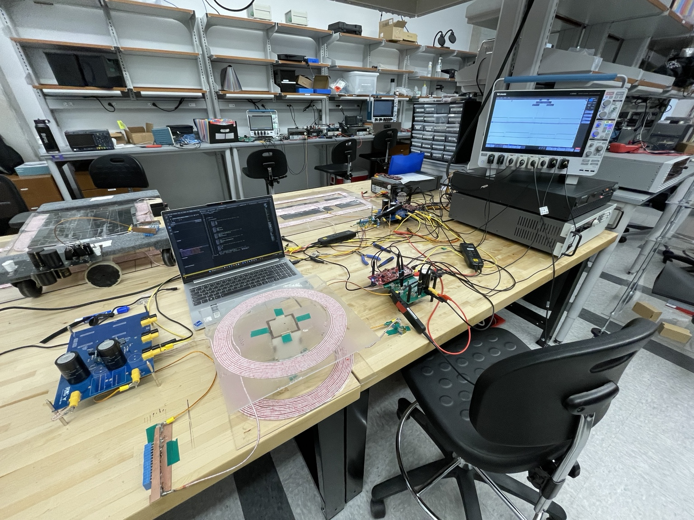
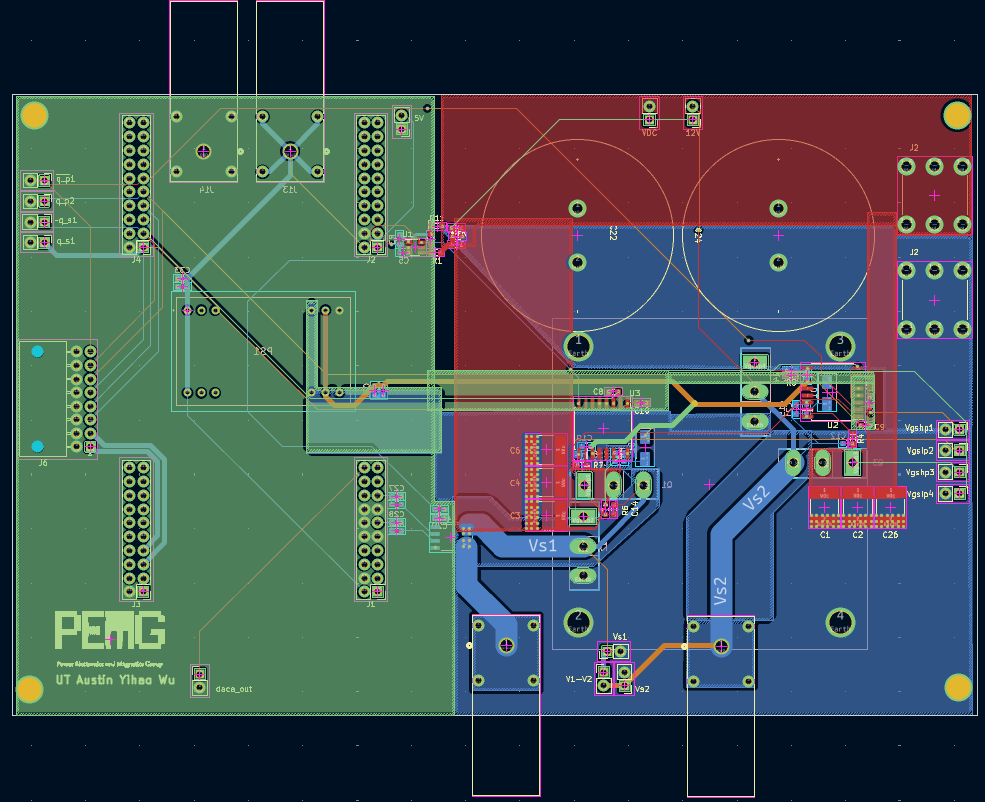

SiC inverter & coil estimation
PCB layout for a 1 kW, 100 kHz SiC inverter, with embedded C/C++ firmware for estimating wireless-coil parameters.
The SiC inverter switches DC into high-frequency AC to drive a wireless-power coil. Current measurements feed an embedded algorithm that estimates coil self-inductance, mutual inductance, and the receiver’s load resistance.


